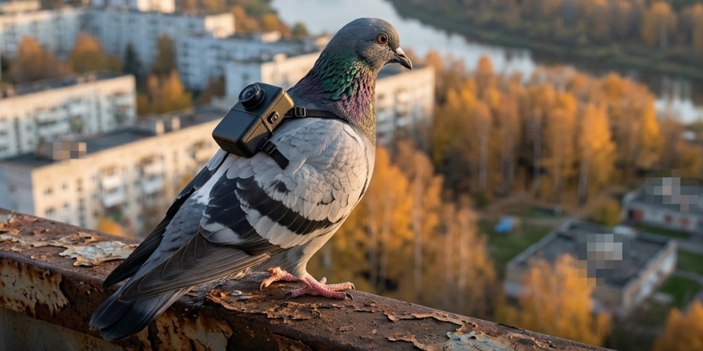

Geekotidien · Édition du 27 novembre 2026
Pigeons-drones avec implants
Photo aérienne en Russie

La société russe Neiry propose en bêta un service commercial de photographie aérienne réalisé par des pigeons équipés d'implants cérébraux, appelés « biodrones », selon Notebookcheck. Le prix part de 300 000 roubles (environ 3 800 $) par km².
Selon Neiry, les biodrones ont plus de 10 heures d'autonomie, plus de 100 km de distance de contrôle, plus de 100 vols hors laboratoire et plus de 1 000 images, avec une résolution inférieure à 20 cm par pixel. Des impulsions électriques incitent l'oiseau à changer de direction.
Les applications visées sont les lignes électriques, les pipelines, le gaz et les zones urbaines. Un logiciel floute les visages sur les images. Le nombre de pigeons n'est pas précisé.
Neiry présente ce service comme une alternative possible aux drones classiques, sans clients établis selon l'article. Le taux de survie de 100 % est un objectif affiché par Neiry, non un résultat vérifié. L'article repose sur une seule source, Forbes.ru, et sur les déclarations de Neiry, non vérifiées de façon indépendante.
Le + : Un logiciel floute les visages sur les images.